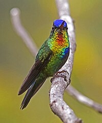
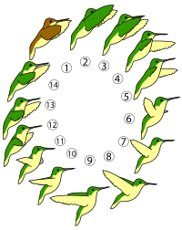

Сайт про пташок колібрі
Опис
Колібрієві — дрібні птахи, довжина більшості представників цієї родини становить 6-13 см
Оперення
Яскраве, райдужне забарвлення деяких частин оперення колібрієвих зумовлене мікроструктурою їхнього пір'я. У них зазвичай відсутні гачечки, а під верхнім шаром в борідках знаходиться нерівномірний шар меланінів, що має мозаїчну структуру і заповнений пухириками повітря. В межах однієї борідки цей шар може включати до 10 рівнів.
Анатомія
Анатомія колібрі має деякі характерні особливості, пов'язані з унікальним польотом представників цієї родини. Колібрієвим притаманний довгий і високий кіль груднини і вісім пар ребер (на дві пари більше, ніж у більшості птахів), що дозволяють птахам стабілізувати тіло під час польоту.
Поведінка
Близькоспоріднені групи колібрієвих мають деякі спільні риси поведінки. Зокрема, всі представники підродини ермітних (Phaethornithinae) постійно махають хвостом, сидячи на сідалі, а під час залицяння широко відкривають дзьоб.
Вокалізація
Високі, односкладові поклики колібрі, які тривають менше однієї секунди, і виконуються як самцями, так і самицями, можна почути раніше, ніж побачити самих птахів. Зазвичай вони, поряд з серією швидких агресивних голосових сигналів, покликані захищати кормову територію, а також є важливою ідентифікаційною ознакою, оскільки є специфічними для кожного виду.
Заціпеніння
Внаслідок повної відсутності пуху колібрі можуть підтримувати температуру тіла на стабільному рівні лише за рахунок власного метаболізму.
Політ
Тремтячий політ колібрі допомагає їм маневрувати краще за інших птахів та зависати в повітрі перед квіткою. При цьому загострені крила переміщуються переважно в горизонтальній площині і постійно перекручуються так, що вверх є направленою то одна сторона крил, то інша, а кінчики крил описують в повітрі пласку вісімку.